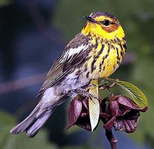
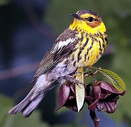

| Cape May Warbler | |
|---|---|
|  | |
| Conservation status | |
| Binomial name | |
| Dendroica tigrina (Gmelin, 1789) |
| Cape May Warbler | |
|---|---|
|  | |
| Conservation status | |
| Binomial name | |
| Dendroica tigrina (Gmelin, 1789) |
The Cape May Warbler, Dendroica tigrina, is a small New World warbler. It breeds in northern North America. Its breeding habitat spans across all but the westernmost parts of southern Canada, and into the Great Lakes region and New England. It is migratory, wintering in the West Indies. This species is a very rare vagrant to western Europe.
The summer male Cape May Warbler has a brown back, yellowish rump and dark brown crown. The underparts are yellow, streaked black, giving rise to the bird's scientific name. The throat and nape are bright yellow and the face is chestnut with a black eyestripe. There is a narrow white wing bar.
Other plumages resemble washed-out versions of the summer male, and, in particular, lack the strong head pattern. The yellowish rump and, at least indications of the white wing bar, are always present.
The breeding habitats of this bird is the edges of coniferous woodland. Cape May Warblers nest in dense foliage near the trunk of a conifer, commonly a Black Spruce, and lay 4-9 eggs in a cup nest.
This species is insectivorous, and lays larger clutches in years when Spruce Budworm is abundant. It picks insects up from the tips of conifer branches or flies out to catch insects in flight. The Cape May Warbler also feeds on berry juice and nectar in winter, and has, uniquely for a warbler, a tubular tongue to facilitate this action.
The song of the Cape May Warbler is a simple repetition of high tsi notes. The call is a thin sip. This bird usually sings from high perches.

{kind=link}
{kind=link}